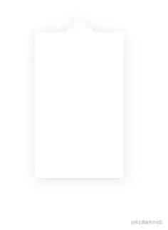

我们在处理图片时，经常使用的一个功能就是滤镜，它能使一张图像呈现各种不同的视觉效果。在 CSS 中，也有一个filter属性，让我们能用 CSS 代码为元素指定各种滤镜效果，比如模糊、灰度、明暗度、颜色偏移等。
filter的基础使用非常简单，CSS 标准里包含了一些已实现预定义效果的函数
1
2
3
4
5
6
7
8
9
10
11
12
13
14
15
16
17
18
19
20
21
22
23
24
25
26
27
28
29
30
|
filter: blur(5px);
filter: brightness(0.4);
filter: contrast(200%);
filter: drop-shadow(16px 16px 20px blue);
filter: grayscale(50%);
filter: hue-rotate(90deg);
filter: invert(75%);
filter: opacity(25%);
filter: saturate(30%);
filter: sepia(60%);
filter: url("filters.svg#filter-id");
filter: contrast(175%) brightness(3%);
filter: drop-shadow(3px 3px red) sepia(100%) drop-shadow(-3px -3px blue);
filter: none;
filter: inherit;
filter: initial;
filter: revert;
filter: revert-layer;
filter: unset;
|
函数
- blur():将高斯模糊应用于输入图像。
- brightness(): 将线性乘法器应用于输入图像，以调整其亮度。值为 0% 将创建全黑图像；值为 100% 会使输入保持不变，其他值是该效果的线性乘数。如果值大于 100% 将使图像更加明亮。
- contrast()：调整输入图像的对比度。值是 0% 将使图像变灰；值是 100%，则无影响；若值超过 100% 将增强对比度。
- drop-shadow()：使用 参数沿图像的轮廓生成阴影效果，阴影语法类似于 （在 CSS 背景和边框模块中定义），但不允许使用 inset 关键字以及 spread 参数。与所有 filter 属性值一样，任何在 drop-shadow() 后的滤镜同样会应用在阴影上。
- grayscale()：将图像转换为灰度图。值为 100% 则完全转为灰度图像，若为初始值 0% 则图像无变化。值在 0% 到 100% 之间，则是该效果的线性乘数。
- hue-rotate()：应用色相旋转。 值设定图像会被调整的色环角度值。值为 0deg，则图像无变化。
- invert()：反转输入图像。值为 100% 则图像完全反转，值为 0% 则图像无变化。值在 0% 和 100% 之间，则是该效果的线性乘数。
- opacity():应用透明度。值为 0% 则使图像完全透明，值为 100% 则图像无变化。
- saturate():改变图像饱和度。值为 0% 则是完全不饱和，值为 100% 则图像无变化。超过 100% 则增加饱和度。
- sepia():将图像转换为深褐色。值为 100% 则完全是深褐色的，值为 0% 图像无变化.
组合函数
你可以组合任意数量的函数来控制渲染。滤镜将按声明顺序依次应用。以下示例增强了图像的对比度和亮度。
filter: contrast(175%) brightness(103%);
滤镜在日常开发中是很常见的，比如使用drop-shadow给不规则形状添加阴影；使用blur来实现背景模糊，以及毛玻璃效果等。
1
2
3
4
5
6
7
8
9
10
11
12
13
14
15
16
17
18
19
20
21
22
23
24
25
26
27
28
29
30
31
32
33
34
35
|
<!DOCTYPE html>
<html lang="en">
<head>
<meta charset="UTF-8" />
<title>Document</title>
<style>
.box {
background-color: #fff;
position: relative;
width: 125px;
height: 204px;
margin: 50px;
filter: drop-shadow(0px 2px 8px rgba(198, 198, 198, 0.5));
/* box-shadow: 0px 2px 8px 0px rgba(198, 198, 198, 0.5); */
}
.box::after {
content: "";
position: absolute;
top: -40px;
left: calc(50% - 20px);
width: 0;
height: 0;
border: 20px solid transparent;
border-bottom-color: #fff;
}
</style>
</head>
<body>
<div class="box"></div>
</body>
</html>
|
